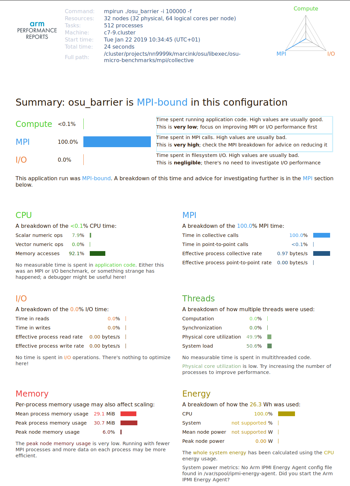

OSU benchmark
The OSU benchmark suite measures the communication speed using a number of tests implemented using MPI, OpenSHMEM, UCP, and UPCXX. To compile it on Fram you can use either OpenMPI (recommended for best MPI performance), or Intel MPI. At the time of writing Arm Performance Reports did not work with OpenMPI on Fram. Results using Intel MPI are presented instead:
$ module load intel/2018b
$ cd osu-micro-benchmarks-5.4.4
$ ./configure CC=mpicc CXX=mpicxx --prefix=$HOME/osu
$ make install
Below are results of the osu_barrier test (MPI_Barrier call) on 32
compute nodes, using 512 MPI ranks (16 ranks per node):
$ mpirun ./osu_barrier -i 100000
# OSU MPI Barrier Latency Test v5.4.4
# Avg Latency(us)
9.25
And the results of the same test with profiling:
$ perf-report mpirun ./osu_barrier -i 100000
# OSU MPI Barrier Latency Test v5.4.4
# Avg Latency(us)
238.15
Here the profiling overhead is enormous: MPI_Barrier takes ~26 times
longer than in the non-profiled tests. The following is the generated
HTML peformance report:

The report correctly identified the code as an MPI benchmark, and attributed all the work to MPI collective calls. However, the profiling overhead is very large and can have impact on actual performance of real-world applications, and hence on the applicability of the entire analysis.
In practice, this overhead cannot be estimated by simply measuring the total execution time of profiled and non-profiled runs to see how much the profiling slowed down our application:
$ time mpirun -np N <program>
[...]
$ time perf-report -n N <program>
[...]
Remember that, in addition to the profiling overhead, there is the
profiling startup and data collection costs, which
can be by far larger than the application run time (see the discussion
in the LINPACK benchmark section).
To overcome this problem one needs to include some time measurement
facilities inside the profiled application using, e.g., the C printf
statements. Alternatively, perf-report should be started to profile
the time command itself:
$ perf-report /usr/bin/time mpirun <program>